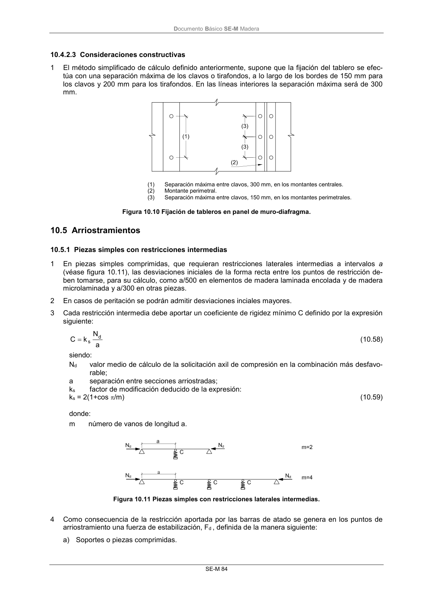

DB-SE-M Madera · edición 2019-12-20 · capa oficial
Documento DB-SE-M-oficial · SHA-256 del PDF 26b5819839ebfda78b0b119c5e76a0a37773b0d763c05688541870075df93718
Página física 90 de 132.
Copia fiel del PDF fuente · Fuente oficial
Ficha de la disposición en la fuente oficial
Formato: Texto de la página (Markdown)
Documento Básico SE-M Madera SE-M 84 10.4.2.3 Consideraciones constructivas 1 El método simplificado de cálculo definido anteriormente, supone que la fijación del tablero se efec- túa con una separación máxima de los clavos o tirafondos, a lo largo de los bordes de 150 mm para los clavos y 200 mm para los tirafondos. En las líneas interiores la separación máxima será de 300 mm. (1) Separación máxima entre clavos, 300 mm, en los montantes centrales. (2) Montante perimetral. (3) Separación máxima entre clavos, 150 mm, en los montantes perimetrales. Figura 10.10 Fijación de tableros en panel de muro-diafragma. 10.5 Arriostramientos 10.5.1 Piezas simples con restricciones intermedias 1 En piezas simples comprimidas, que requieran restricciones laterales intermedias a intervalos a (véase figura 10.11), las desviaciones iniciales de la forma recta entre los puntos de restricción de- ben tomarse, para su cálculo, como a/500 en elementos de madera laminada encolada y de madera microlaminada y a/300 en otras piezas. 2 En casos de peritación se podrán admitir desviaciones inciales mayores. 3 Cada restricción intermedia debe aportar un coeficiente de rigidez mínimo C definido por la expresión siguiente: a N k C d s (10.58) siendo: Nd valor medio de cálculo de la solicitación axil de compresión en la combinación más desfavo- rable; a separación entre secciones arriostradas; ks factor de modificación deducido de la expresión: ks = 2(1+cos /m) (10.59) donde: m número de vanos de longitud a. Figura 10.11 Piezas simples con restricciones laterales intermedias. 4 Como consecuencia de la restricción aportada por las barras de atado se genera en los puntos de arriostramiento una fuerza de estabilización, Fd , definida de la manera siguiente: a) Soportes o piezas comprimidas.
